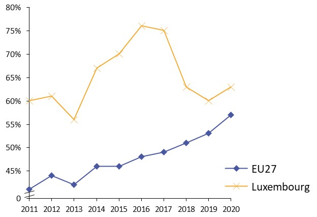
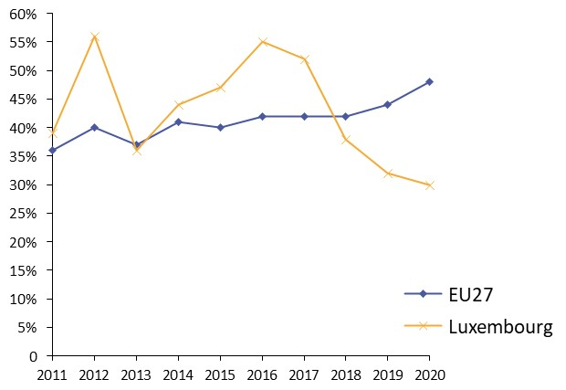
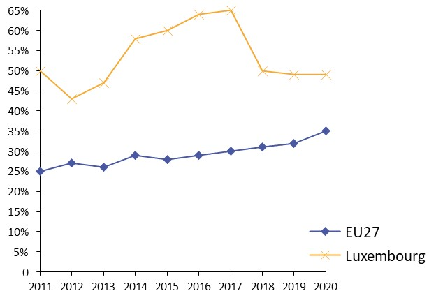
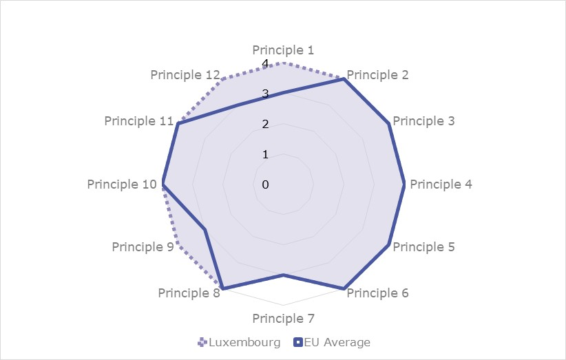
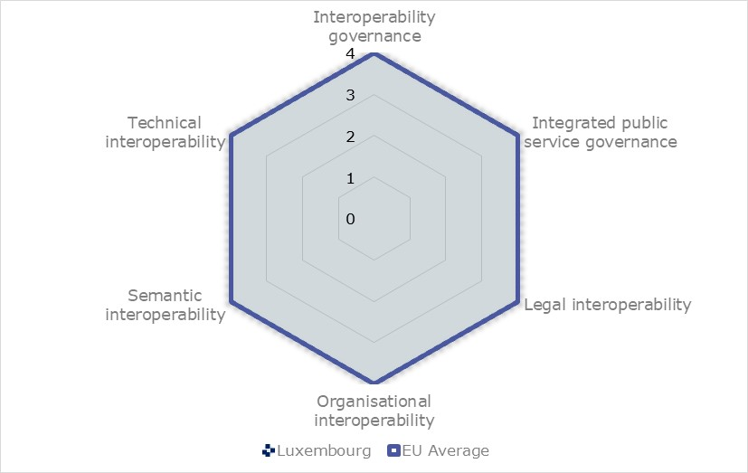
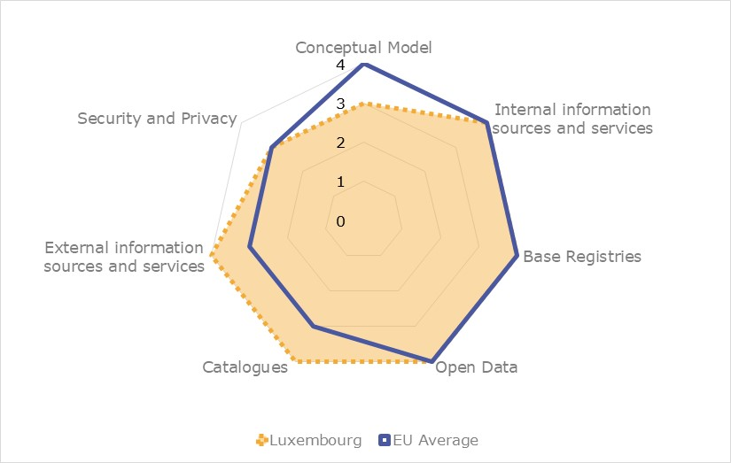
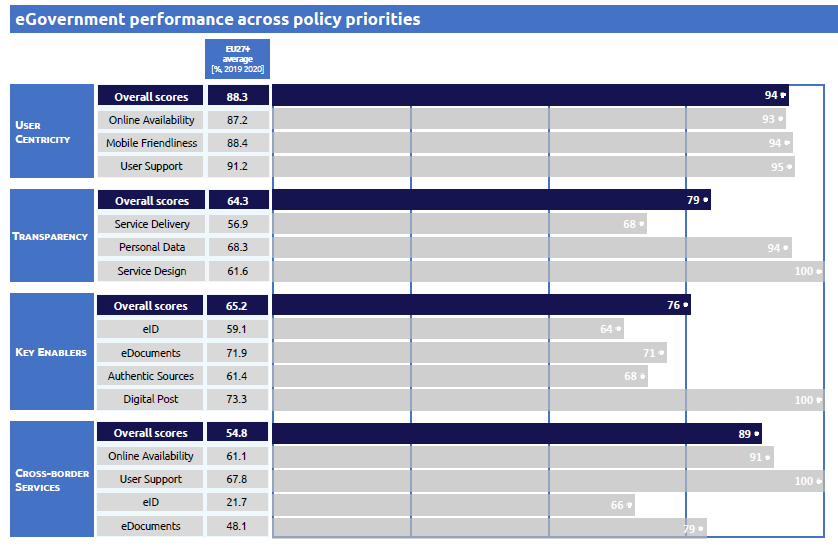

Digital Public Administration factsheet 2021
Luxembourg
Table of Contents
Digital Public Administration factsheet 2021
2 Digital Public Administration Highlights 10
3 Digital Public Administration Political Communications 12
4 Digital Public Administration Legislation 20
5 Digital Public Administration Governance 26
6 Digital Public Administration Infrastructure 33
7 Cross border Digital Public Administration Services 41
Please note that the data collection exercise for the update of the 2021 edition of the Digital Public Administration factsheets took place between March and June 2021. Therefore, the information contained in this document reflects this specific timeframe
Country
Profile
1
Country Profile
Basic data
Population: 620 001 inhabitants (2020)
GDP at market prices: EUR 64 143 million (2020)
GDP per inhabitant in PPS (Purchasing Power Standard EU 27=100): 266 (2020)
GDP growth rate: -1.3% (2020)
Inflation rate: 0.0% (2020)
Unemployment rate: 6.8% (2020)
General government gross debt (Percentage of GDP): 24.9 (2020)
General government deficit/surplus (Percentage of GDP): -4.1 (2020)
Area: 2 600 km²
Official EU languages: French, German
Currency: Euro
Source: Eurostat (last update 12 July 2021)
Digital Public Administration Indicators
The following graphs present data for the latest Generic Information Society Indicators for Luxembourg compared to the EU average. Statistical indicators in this section reflect those of Eurostat at the time the Edition is being prepared.
Percentage of individuals using the Internet for interacting with public authorities in Luxembourg | Percentage of individuals using the Internet for obtaining information from public authorities in Luxembourg |
 |  |
Percentage of individuals using the Internet for downloading official forms from public authorities in Luxembourg | Percentage of individuals using the Internet for sending filled forms to public authorities in Luxembourg |
 |
|

Interoperability State of Play
In 2017, the European Commission published the European Interoperability Framework (EIF) to give specific guidance on how to set up interoperable digital public services through a set of 47 recommendations. The picture below represents the three pillars of the EIF around which the EIF Monitoring Mechanism was built to evaluate the level of implementation of the EIF within the Member States. It is based on a set of 71 Key Performance Indicators (KPIs) clustered within the three main pillars of the EIF (Principles, Layers and Conceptual model), outlined below.
Source: European Interoperability Framework Monitoring Mechanism 2020

Source: European Interoperability Framework Monitoring Mechanism 2020

Source: European Interoperability Framework Monitoring Mechanism 2020

Source: European Interoperability Framework Monitoring Mechanism 2020
eGovernment State of Play
The graph below presents the main highlights of the latest eGovernment Benchmark Report, an assessment of eGovernment services in 36 countries: the 27 European Union Member States, as well as Iceland, Norway, Montenegro, the Republic of Serbia, Switzerland, Turkey, the United Kingdom, Albania and Macedonia (referred to as the EU27+).
The study evaluates online public services on four dimensions:
- User centricity: indicates the extent to which a service is provided online, its mobile friendliness and its usability (in terms of available online support and feedback mechanisms).
- Transparency: indicates the extent to which governments are transparent about (i) the process of service delivery, (ii) policy making and digital service design processes and (iii) the personal data processed in public services.
- Cross-border services: indicates the extent to which users of public services from another European country can use the online services.
- Key enablers: indicates the extent to which technical and organizational pre-conditions for eGovernment service provision are in place, such as electronic identification and authentic sources.
The 2021 report presents the biennial results, achieved over the past two years of measurement of all eight life events used to measure the above-mentioned key dimensions. More specifically, these life events are divided between six ‘Citizen life events’ (Career, Studying, Family life, measured in 2020, and Starting a small claim procedure, Moving, Owning a car, all measured in 2019) and two ‘Business life events’ (Business start-up, measured in 2020, and Regular business operations, measured in 2019).

Source: eGovernment Benchmark Report 2021 Country Factsheets
2
Digital Public Administration Highlights
Digital Public Administration Highlights
Digital Public Administration Political Communications
On 11 January 2020, the Ministry for Digitalisation has announced the four strategic axes to achieve the complete transition to digital government, setting the objectives and priorities for the upcoming years. The Ministry's strategic axes the following: (1) Developing eGovernment; (2) Advancing administrative reform; (3) Promoting digital inclusion; (4) Integrating new technologies.
On 5 February 2021, the Government Council adopted the e-governance strategy for 2021-2025. The strategy follows one of the strategic axes of the Ministry for Digitalisation, aiming at strengthening eGovernment while enabling the transition to digital government. The strategy sets essential elements for a successful digital transition of the State in order to ensure qualitative digital services.
On 24 February 2021, the government approved the fourth national cybersecurity strategy. The strategy builds on the foundations of the previous strategies and illustrates the government’s engagement to meet the security challenges related to the digital transformation.
Digital Public Administration Legislation
The law of 17 July 2020 modifying the modified law of 14 August 2000 on electronic commerce (the e-Commerce law) bringing it into line with with Regulation (EU) No 910/2014 on electronic identification and trust services for electronic transactions in the internal market (the eIDAS Regulation).
The law of 22 January 2021, amending the modified law of 5 April 1993 on the financial sector and the law of 6 April 2013 on dematerialised securities, introduces the possibility to use distributed ledger technology (blockchain) for dematerialised securities.
Digital Public Administration Governance
Digital Public Administration Political Communications
3
Digital Public Administration Political Communications
Specific political communications on digital public administration
Ministry for Digitalisation Strategic Axes
On 11 January 2020, the Ministry for Digitalisation announced the four strategic axes to achieve a full transition to a digital government, setting the objectives and priorities for the upcoming years.
The Ministry also announced that the objectives and the initiatives defined under each axis can only be achieved by applying a collaborative approach to innovation and by facilitating technological innovation.
The Ministry's strategic axes are the following:
- 1. Developing eGovernment;
- 2. Advancing the administrative reform;
- 3. Promoting digital inclusion; and
- 4. Integrating new technologies.
eGovernance strategy 2021-2025
In February 2021, the Government Council adopted the eGovernance Strategy for 2021—2025, jointly developed by the Ministry for Digitalisation and the Government IT Centre (CTIE).
One of the strategic axes of the Ministry for Digitalisation aims to strengthen eGovernment and enable the transition to a digital government, a concept which designates the use of technologies within the framework of State modernisation strategies with the objective of creating real added value for citizens, businesses and public administrations.
The e-governance Strategy forms part of this approach by setting the essential elements for a successful digital transition of the State in order to ensure quality digital services and to guarantee a gradual transition to a digital government, as recommended by international organisations.
The 2021—2025 strategy highlights the principles to be respected when digitising public services in order to offer citizens and businesses public services that meet their needs. The goal is promoting transversal digital accessibility, developing user-centred services, offering attractive online public services and investing in citizens' trust in online State services.
Furthermore, the strategy analyses the essential conditions for the central public administration so as to enable it to respond effectively to the needs of society. The overarching objectives in the digital context are to facilitate the transition to an efficient paperless administration and to have an IT environment conducive to new ways of working. In addition, the strategy underlines the importance of being able to rely on a central IT partner who is competent, agile and reliable. To this aim, the CTIE aims to strengthen its digitalisation services, develop cutting-edge infrastructures and further guarantee very high levels of security and reliability.
The Governing Council also mandated the inter-ministerial Committee for Digitalisation to coordinate the implementation of this strategy.
Einfach Lëtzebuerg
The government has been committed to administrative reform and simplification for several years now and much progress has already been made, notably under the programme Einfach Lëtzebuerg. However, the simplification of administrative formalities and procedures is continually evolving. Drawing on technological advances in particular, the programme aims to provide a simple and predictable framework for citizens and companies in their relations with the State. Any new project, legislation, procedure or adaptation of existing ones, when deemed necessary, need to be respectively considered or reconsidered in light of the ‘digital’ component.
Digital Lëtzebuerg
Strategic Vision for Artificial Intelligence and Data-Driven Innovation Strategy
- Becoming one of the most digitally advanced societies in the world, in particular within the European Union;
- Establishing Luxembourg as a sustainable, data-driven economy; and
- Supporting the development of AI with a human-centred approach.
On 20 November 2020, the government undertook an additional step in the pursuing of the national Strategic Vision for AI by launching a public consultation on the perception of AI among the population and societal actors.
Berlin Declaration on Digital Society and Value-Based Digital Government
On 8 December 2020, the Minister Delegate for Digitalisation signed the Berlin Declaration on Digital Society and Value-Based Digital Government. The Berlin Declaration follows on from the Tallinn Declaration of 2017 and the European e-Government Action Plan 2016—2020 and sets out common principles and objectives for a digital public administration based on democratic values and fundamental rights established in particular in the Charter of Fundamental Rights of the European Union.
The GovTech Lab, which is the result of a cooperation between the Ministry for Digitalisation and its technological arm, the Government IT Centre (CTIE), sets out to encourage and support a culture of innovation and change within the State in order to rethink existing procedures and operational flows and integrate principles such as digital by default, design thinking or service by design when conceiving new solutions. For its calls for solutions, the Ministry for Digitalisation has opted to make the widest possible use of the innovation partnership, which allows a broader participation of external players thanks to a more open public procurement procedure which is articulated in different phases.
Interoperability
In 2019, the Ministry for Digitalisation set up a working group which established an effective governance model for the NIF in 2020. In the framework of the NIF governance defined in 2020, the Sectorial Committee for Interoperability of the central government was established, which had its first meeting in April 2021.
Key enablers
Access to public information
No political communication has been adopted in this field to date.
eID and Trust Services
No political communication has been adopted in this field to date.
Security aspects
Fourth National Cybersecurity Strategy
On 24 February 2021, the government approved the fourth National Cybersecurity Strategy. The strategy builds on the foundations of the previous strategies and illustrates the government’s engagement to meet the security challenges related to the digital transformation. The strategy focuses on three key objectives, each containing a series of strategic priorities:
- Objective I: building confidence in the digital world and protecting human rights online;
- Objective II: strengthening the security and resilience of digital infrastructures in Luxembourg; and
- Objective III: developing a reliable, sustainable and secure digital economy.
Interconnection of base registries
No political communication has been adopted in this field to date.
eProcurement
No political communication has been adopted in this field to date.
Domain-specific political communications
Digital (4) Education Strategy
On 20 May 2015, the Minister for Education, Children and Youth presented the Digital Strategy for Education called ‘Digital (4) Education’. This strategy had two key objectives:
- Preparing young people for work in a complex and constantly changing environment (under the ‘digital for education’ umbrella); and
- Promoting new learning strategies, software, and innovating educational projects (under the ‘digital for education’ umbrella).
Other projects under the Digital (4) Education Strategy include: (i) training teaching staff and offering access to digital teaching resources as part of eduSphere; (ii) introducing a maths-teaching software (for cycle 4) to be used at home and at school as part of MathemaTIC; and (iii) Digital Classroom Lëtzebuerg, providing comprehensive computer literacy training and enabling students to better manage their lives through digital tools. Further projects include makerspaces in schools, FutureHub labels for schools committed to new technologies and an online teaching/learning platform.
Einfach Digital
The measures taken are part of the Media Compass (Medienkompass), a reference framework issued by the ministry in March 2020 which provides guidelines to schoolteachers.
Within the framework of the Einfach Digital initiative, a campaign on media use addressed to parents has been launched.
Digital Inclusion Policy
In 2019, the Ministry for Digitalisation created a working group on the matter of digital inclusion to start the coordination and preparation of a national action plan for digital inclusion. Furthermore, in this field, the National Policy on eParticipation and/or Inclusion, as well as a web strategy focusing on web accessibility have existed for more than 15 years now.
eHealth Strategy
Today, the government continues to promote a national health strategy to facilitate the exchange and secure electronic sharing of health data between health professionals and patients, and also to enable better monitoring and better coordination of the patients’ healthcare. In pursuit of this objective, the National Agency for Shared Health Information (eSanté) has developed and implemented the National eHealth Platform, which includes basic urban development components pooled in the different cases of use and various users of health services.
Emerging technologies
EuroHPC
NVIDIA Partnership
Blockchain White Paper and Public Sector Blockchain
In June 2018, the Ministry of Economy with the support of ILNAS published a White Paper on Technical Standardisation related to blockchain technology. The objective of the white paper was to describe the main developments related to blockchain and distributed ledger technologies. In this regard, a comprehensive analysis is presented by considering:
- Blockchain concepts and technology;
- The economic and business impact; and
- Technical standardisation.
In 2019, the Ministry for Digitalisation, together with the Syndicat Intercommunal de Gestion Informatique (SIGI) and the Government IT Centre announced the creation of the first public sector blockchain (PSBC).
In 2020, the PSBC was established at technical level, by establishing the network with nodes at the Government IT Centre, SIGI and Restena, and at governance level through the signing of a governance agreement between the Ministry for Digitalisation and the SIGI, as well as through the establishment of a Governance Committee between the abovementioned partners and the technical working groups.
5G Strategy
- Assigning the necessary spectrum: Luxembourg’s efforts focused on freeing the necessary spectrum bands and assigning them in a suitable way to the interested mobile network operators;
- Supporting the technical roll-out: based on the existing regulatory framework, Luxembourg is open to support the technical roll-out (e.g. access to public infrastructure);
- Answering citizen’s concerns: Luxembourg is among the countries with the lowest exposure limits for electro-magnetic fields (EMF). The questions raised by its citizens are addressed by a transparent communication of the roll-out process and the scientific data about EMF;
- Pioneering a citizen-centric 5G network: with its past conferences and a call for projects, Luxembourg is challenging all stakeholders in utilizing the potential of the 5G network by triggering pilot projects that bring added value to the society in the fields of eHealth, smart mobility and digital communities; and
- Developing an innovative mindset: Luxembourg continues its efforts in developing the future-proof skills of its next generations by fostering interest in new technologies allowing mobile communication.
5G CroCo Project
National Call for Projects
In 2019, the Department of Media, Telecommunications and Digital Policy launched a national call for projects which gathered 29 project submissions. Following the evaluation by an expert committee and the review of an inter-ministerial commission, eight projects so far are well underway and cover a range of thematic areas, from EMF measuring to e-Health and smart metering, to 5G fixed wireless access applications. All projects focus on how citizens can use and benefit from the technology. A monitoring committee with representatives from ministries and administrations dealing with the topic meets on a regular basis with the project leaders. During these exchanges, both sides get the opportunity to present the latest updates on the progress of the project and offer advice, if needed.

Digital Public Administration Legislation
4
Digital Public Administration Legislation
Specific legislation on digital public administration
No legislation has been adopted in this field to date.
Interoperability
No legislation has been adopted in this field to date.
Key enablers
Access to public information
Reuse of Public Sector Information
The Law on the Reuse of Public Sector Information (PSI) of 23 May 2016 amended the law of 4 December 2007.
Electronic Archiving
The Law on Electronic Archiving was adopted on 25 July 2015 (law of 25 July 2015 relating to electronic archiving and amending: 1. Article 1334 of the Civil Code; 2. Article 16 of the Commercial Code; 3. the amended law of 5 April 1993 on the financial sector).
Access to Information
The Law relating to a Transparent and Open Administration was adopted on 14 September 2018. The purpose of the new law was to define the framework for the implementation of a policy for opening citizens’ administrative documents held by government departments, municipalities, local authorities and public institutions and placed under the supervision of the State or municipalities.
eID and Trust Services
eIDAS
The law of 17 July 2020 modifying the modified law of 14 August 2000 on electronic commerce (the e-Commerce law) bringing it into line with with Regulation (EU) No 910/2014 on electronic identification and trust services for electronic transactions in the internal market (the eIDAS Regulation).
The new law represents the last piece in Luxembourg's comprehensive and robust legal framework on trust services (including e-signatures) and e-archiving.
eCommerce Act
The amended eCommerce Act of 14 August 2000, complemented by a Regulation on electronic signatures and electronic payments of 1 June 2001, transposed the EU Directive on Electronic Signatures (1999/93/EC).
The eCommerce Act explicitly mentioned two types of eSignatures: 1) a basic type, which consists of a “set of data which is linked to the deed in a non-dissociable way and warrants the integrity of the deed […]. The electronic signature must also ensure the signatory is identified and show the latter's obvious consent to the content of the deed”, and 2) an eSignature “supported by a qualified certificate, which must be created with a secure signature creation device under the sole control of the subscriber”.
Certification service providers can only issue certificates with the approval of the National Accreditation and Supervision Authority. Approved (qualified) certificates are valid for a maximum duration of three years and must be archived by the certification service provider for at least 10 years. The certification providers also have to undergo periodic external security audits.
eSignatures supported by a qualified certificate have the same legal validity as handwritten signatures, and the eCommerce act rendered void all laws and regulations that challenged the validity of a contract on the grounds that it was signed electronically.
The act's primary importance resided in the recognition of eSignatures and eContracts. Unlike the directive it was based on, it did not use the term ‘advanced’ eSignature but rather recognised a ‘qualified’ level of eSignature. It also differs from the directive and similar legislation in other Member States, insofar as it legally recognised electronic wills and electronic deeds and implemented the customer's right to withdraw from an electronic contract within seven days of its creation, free of questions and penalties, with full reimbursement of any money paid to the seller.
The act closely followed the directive in terms of information requirements from seller to customer, the seller's obligation to acknowledge reception of an order, the rules governing the liability and confidentiality requirements for certificate issuers (domestic and foreign), and provisions concerning the auditing and accreditation of certificate issuers.
Security aspects
EU General Data Protection Regulation
In May 2018, the EU General Data Protection Regulation (GDPR) entered into force in the whole EU and therefore also in Luxembourg. In Luxembourg, the National Commission for Data Protection (CNPD), an independent authority for the protection of individuals with regard to the processing of personal data, acts as data controller to fulfil certain requirements regarding the form and the content.
Law on the Organisation of the National Commission for Data Protection and the General Data Protection Scheme
The Act on the organisation of the National Commission for Data Protection and the General Data Protection Framework of 1 August 2018 repealed the previous act on data protection (amended act of 2 August 2002) and completed the General Data Protection Regulation at national level.
The aim of the law of 1 August 2018 is to invest the National Commission for Data Protection (CNPD) with extended tasks conferred by the GDPR and give it greater powers. Furthermore, it defines the legal framework for the specific provisions of Luxembourg law, and in particular those relating to the supervision of employees.
Amended Act on Data Protection and Electronic Communications
The Amended Act on Data Protection and Electronic Communications of 30 May 2005, concerning the specific provisions for the protection of the individual as to the processing of personal data in the electronic communications sector, and amending Articles 88(2) and 88(4) of the Code of Criminal Procedure, which transposes the amended Directive 2002/58/EC, covers the processing of personal data in the sector of electronic communications. The act governs personal data protection in the field of telecommunications and electronic communications, taking into account recent and foreseeable developments in the field of services and technologies involving electronic communications. It aims to protect the privacy of internet users (including protection against unsolicited commercial communications or 'spam') and users of added value services, such as GPS.
Interconnection of base registries
Act on the Identification of Natural Persons, the National Registry of Natural Persons, the Identity Card, the Communal Registries of Natural Persons
The National Registry of Natural Persons (RNPP) (Civil Registry) is covered by the amended Act on the Identification of Natural Persons of 19 June 2013.
The law encompasses the National Registry mandate to hold identifying information for natural persons, data contained in the Registry (reference data such as ID number, name, first name, address, date and place of birth, family status, nationality, refugee status, sex, ID number of parents, ID number of kids, date and place of death, noblesse title), the commission of the National Registry, the Communal Registry and its maintenance, the entries to be made in the Municipal Registry, etc.
The Law on the Registry of Natural Persons, in Article 4(2), prescribes that authentic data already contained in the Registry of Natural Persons must be reused by public administrations, and that the administrations cannot ask citizens to produce more evidence to prove the exactitude of data already existing in the Registry.
Company Registry
The main law regarding the Company Registry (Trade and Companies Registry) is the amended Law on the Trade and Companies Registry and Companies’ Accounting of 19 December 2002. The information available is related to the general provisions regarding which societies must be registered, which ministry is in charge of the Registry, the data to be provided by each society when registering (reference data), followed by information on how to write the annual accounts, balance sheet, etc.
Land Registry
The Land Registry’s main piece of legislation is the amended Law on the Reorganisation of the Cadastre and Topography Administration of 25 July 2002, which provided details regarding the main functions of the administration of cadastre and topography.
As a manager of reference land information and maps, the Land Registry and Topography Administration provides the geodata required for town and country planning and enables the property market to function thanks to effective management of property ownership.
Land Registration
The Act on Land Registration of 11 November 2003 made a number of amendments to the act of 30 March 1979 regarding the tariffs and fees to be incurred by different actors and the digital directory of individuals: it also included provisions for access to the directories of notaries and other persons responsible for the creation or execution of the legal documents and introduced the national identification number of the parties in such documents.
Municipalities Registry
The Law on the Reorganisation of the Cadastre and Topography Administration of 25 July 2002 entrusts the administration of the cadastre and topography with the creation, management, dissemination and updating of a national registry of localities and streets, consisting in the name of localities and streets and the numbering of constructed buildings.
Criminal Records
The amended law on the organisation of the criminal records and the exchange of information extracted from the criminal records between the Member States of the European Union of 29 March 2013 provides details on the electronic criminal records which are under the responsibility of the State Public Prosecutor.
Database of Road Vehicles and their Owners and Holders
The amended Grand-Ducal Regulation of 2 September 1993 authorises the creation and operation of a database of road vehicles and their owners and holders on behalf of the Ministry of Transport as well as the creation and operation of three databases for derived purposes on behalf of the Ministry of Foreign Affairs, the Registration Duties, Estates and VAT Authority and the Customs and Excise Agency.
Central Registry of De Minimis Aid
The Law of 20 December 2019 establishes a central Registry of De Minimis Aid. Any de minimis aid granted in accordance with Commission Regulation (EU) No. 1407/2013 of 18 December 2013 on the application of Articles 107 and 108 of the Treaty on the Functioning of the European Union to de minimis aid shall be entered in a central Registry of de minimis aid. The Minister for Economic Affairs is responsible for processing the information contained in the central Registry of de minimis aid.
eProcurement
Law on eProcurement
The Luxembourg Parliament adopted a new law on public procurement in 2018, the modified Act on Public Procurement of 8 April 2018.
This new law had four main objectives:
- Enabling public markets to become an instrument of political strategy;
- Introducing simplification measures;
- Preventing conflicts of interest, favouritism and corruption; and
- Clarifying certain rules.
eInvoicing Legislation
The Law on Electronic Invoicing in Public Procurement and Concession Contracts was approved on 26 March 2019. It transposed into Luxembourgish law Directive 2014/55/EU of the European Parliament and of the Council of 16 April 2014 on electronic invoicing in public procurement.
The law establishes for all electronic invoices issued under a public contract or a concession contract an obligation for contracting authorities and contracting entities to accept them, to receive them in electronic form and to process them, provided they comply with the European standard on electronic invoicing and one of the syntaxes appearing on the list published by the European Commission. This obligation on the part of contracting authorities and contracting entities obviously entails that the undertakings concerned have the right to send compliant electronic invoices, and no longer have to provide invoices in paper format or in another electronic format.
The draft Law amending the Law of 16 May 2019 on Electronic Invoicing in Public Procurement and Concession Contracts is currently under review.
Domain-specific legislation
No legislation has been adopted in this field to date.
Emerging technologies
Accessibility of the Websites and Mobile Applications of Public Sector Bodies
On 7 May 2019, the Parliament passed the Law on the Accessibility of the Websites and Mobile Applications of Public Sector Bodies. This law transposed into Luxembourgish law Directive (EU) No. 2102/2016 of 26 October 2016, on the accessibility of the websites and mobile applications of public sector bodies.
Though the text focuses on accessibility for people with disabilities, it ultimately benefits all citizens. Indeed, everyone should benefit from improved access to public sector services via websites and mobile applications and benefit from services and information that facilitate their daily lives, and the exercise of their rights at the level of the public dimension and at Union level, including the right to move and reside freely within the territory of the Union and the right to freedom of establishment and freedom to provide services. The law supports the objectives of the Digital Lëtzebuerg government strategy to promote access to new technologies for every citizen.
Law Amending the Circulation of Securities
A new Law on the Circulation of Securities was published on 1 March 2019, amending the law of 1 August 2001. The purpose of this new law was to create a legal framework enabling the circulation of securities by means of the new secure electronic registration technologies, in particular those based on the blockchain, with the aim of increasing legal certainty in this area.
Draft Law on the Issuance of Dematerialised Securities Using Distributed Ledger Technology
The law of 22 January 2021, amending the modified law of 5 April 1993 on the financial sector and the law of 6 April 2013 on dematerialised securities, introduces the possibility to use distributed ledger technology (blockchain) for dematerialised securities.
The draft law pursues the modernisation of Luxembourg securities laws along two directions:
- The introduction of a definition of what constitutes an issuance account in the Dematerialised Securities Law. This is a novelty and will allow for a variety of technologies to be adopted; and
- The expansion in the scope of entities that may be considered as a central account keeper.

Digital Public Administration Governance
5
Digital Public Administration Governance
National
Policy
Ministry for Digitalisation
The competences of the new Ministry for Digitalisation were defined by the Grand Ducal Decree on the Establishment of Ministries on 5 December 2018 and can be summarised as follows:
- Implementation of the Digital Lëtzebuerg Action Plan and monitoring of the ICT sector (shared competence with the Minister for Economy and the Minister for Communications and Media);
- Promotion of the ICT sector (shared competence with the Minister for the Economy);
- Digitalisation of administrative procedures and digital transformation of the public administration;
- Follow-up on the work of the newly created High Digital Transformation Committee;
- Development and implementation of a plan on the Internet of Things.
- Development of the digital infrastructure (in consultation with the Minister for Communications and Media);
- Development of a national strategy in the field of AI (in consultation with the Minister for Communications and Media and the Minister for the Economy);
- Implementation of the 5G national strategy and development of pilot projects (in consultation with the Minister for Communications and Media);
- Assuring a policy of digital inclusion;
- Promotion and organisation of State administrations’ automation, in particular as regards the collection, transmission and processing of data;
- Seeking synergies between the different ministries and optimising their exchange of information;
- Assisting the various administrations of the State in the execution of the routine IT work and the management of fixed and mobile communication systems; and
- State electronic filing.
- The Ministry for Digitalisation has set the goal of successfully achieving digital government, to which the four strategic axes contribute. The ministry's four strategic axes are: (i) developing eGovernment; (ii) advancing administrative reform; (iii) promoting digital inclusion; and (iv) integrating new technologies.
- In February 2020, the Ministry for Digitalisation set up an inter-ministerial committee for the digitalisation in public administration. The committee is chaired by the Ministry for Digitalisation and the Government IT Centre and includes members responsible for the digital transformation in other ministries. The committee meets on a regular basis to take stock of the Luxembourg's digital projects and to set a coordinated agenda of initiatives aiming to reinforce eGovernment in Luxembourg.
Xavier Bettel Prime Minister / / Minister for Communications and Media/ Minister for Digitalisation Contact details: 4, rue de la Congrégation Luxembourg E-mail: info@digital.etat.lu Tel.: (+352) 247 72 100 Source: http://www.digitalisation.lu |
| Marc Hansen Minister Delegate for Digitalisation Contact details: 4, rue de la Congrégation Luxembourg E-mail: info@digital.etat.lu Tel.: (+352) 247 72 100 Source: http://www.digitalisation.lu |

Ministry of State - Media and Communications Service
The Department of Media, Telecommunications and Digital Policy of the Ministry of State is responsible for the coordination and development of the national communications infrastructure (national and international connectivity, wired and wireless networks, data centres) and digital policy.
Ministry of the Economy
The Ministry of the Economy is responsible for creating a business environment that fosters innovation in the IT sector by granting public aid to start-ups, implementing a seed funding and venture capital framework, and simplifying and improving the relationship between IT innovators and the public sector.
Ministry of Finance
The Ministry of Finance is responsible for supporting the development of innovative IT tools for the financial sector, such as electronic and/or mobile payment solutions, virtual currencies and financial data analytics tools and services.
Ministry of Higher Education and Research
The Ministry of Higher Education and Research is in charge of promoting eSkills, IT training and R&D programmes in IT.
Ministry of the Civil Service
The Ministry of the Civil Service is responsible for promoting and assuring:
- An attractive and exemplary public service enabled by performance-oriented, dynamic and highly motivated public officials; and
- A quality public service based on a simple, innovative and effective regulatory framework, which favours social cohesion and the economic prosperity of Luxembourg.
Government IT Centre
The Government IT Centre (Centre des technologies de l'information de l'État, CTIE) was established in 2009. The Centre constitutes an active part of the Ministry for Digitalisation and is the main administration of the government in the fields of eGovernment, IT and modernisation of the State through ICT.
Coordination
Ministry for Digitalisation
The Ministry for Digitalisation coordinates eGovernment developments in the public administration, which is also one of the four strategic priorities of the ministry.
Government IT Centre
The Government IT Centre (Centre des technologies de l'information de l'État, CTIE) provides service coordination and planning to government bodies and assists those bodies in the reorganisation and optimisation of their tasks. To this end, the centre coordinates the following activities:
- Organisation of the automation of government departments regarding the collection, transmission and processing of data;
- Development and maintenance of administrative processes' mapping and their interoperability status;
- Provision of organisational support to State administrations and assistance in their reorganisation efforts; and
- Identification of synergies between the various State administrations and optimisation of the information exchange among them.
Furthermore, the CTIE is responsible for specific tasks such as the management of the MyGuichet portal.
Implementation
Government IT Centre
Government Ministries and Administrations
Government ministries and administrations are responsible for the implementation of the eGovernment projects falling within their respective fields of competence.
Support
Government IT Centre
The Government IT Centre (Centre des technologies de l'information de l'État, CTIE) runs a support centre (helpdesk) for the internal and external users of the systems operated by the CTIE, as well as the Guichet.lu Helpdesk, whose primary goal is to help citizen and enterprises carry out their administrative procedures.
Interoperability Coordination.
Government IT Centre
Base Registry Coordination
Government IT Centre
The centralised management by the Government IT centre (Centre des technologies de l'information de l'État, CTIE), under the control of the Ministry for Digitalisation, enables the digital exchange of information across the public sector. Their responsibilities are, aside from maintaining one specific registry (the National Registry of Persons), to provide general support for interoperability between administrations and to devise a broader strategy that drives the evolution of base registries.
Audit
Court of Auditors
The Court of Auditors monitors the legality and regularity of the State income and expenditure; furthermore, it controls the use of public funds.
Data Protection
National Data Protection Commission
Subnational (federal, regional and local)
Policy
Coordination
Inter-Communal IT Management Association
Implementation
Inter-Communal IT Management Association
The Inter-Communal IT Management Association (Syndicat Intercommunal de Gestion Informatique, SIGI) project management office’s role is to take charge of the new demands of different actors and to formalise them in a portfolio of projects before proceeding with their planning and execution.
The application of methodological standards, in a structured framework and with experienced staff, guarantees the implementation of quality solutions.
Support
Inter-Communal IT Management Association
Support is a key element of the service offered by the Inter-Communal IT Management Association (Syndicat Intercommunal de Gestion Informatique, SIGI), which includes incident management and change management. It is often the first point of contact of municipalities with SIGI, either to solve a problem or simply to receive advice.
Interoperability coordination
No responsible organisation has been reported to date.
Base registry coordination
No responsible organisation has been reported to date.
Audit
No responsible organisation has been reported to date.
Data Protection
National Commission for Data Protection
The National Commission for Data Protection (CNPD) is an independent authority established by the Law on the protection of persons with regard to the processing of personal data of 2 August 2002.
Digital Public Administration Infrastructure
6
Digital Public Administration Infrastructure
Portals
National Portals
luxembourg.lu
Guichet.lu
The portal comprises information on various topics and related administrative procedures, grouped by ten major themes for citizens and ten major themes for companies. The platform is regularly updated with new elements, as in the case of the changes to procedures following Brexit on 2020.
Guichet.lu’s primary objective is to improve the value and quality of electronic services, integrating various administrative formalities on a single internet portal that gathers all relevant procedures, forms and information made available by the State. The interactive portal MyGuichet.lu allows its users to:
- Carry out administrative procedures in a simple and transparent manner reusing their personal data from authentic sources;
- View their personal data held by official bodies through authentic sources, e.g. information on obtained housing aid;
- Receive electronic documents issued by official bodies (eDelivery); and
- Book an appointment online with administrative bodies;
In order to make full use of the different functionalities, such as authentic sources and eDelivery, users have to log in to their personal space with an electronic authentication certificate (LuxTrust Token, Smartcard, Signing Stick, or ID Card). These certificates guarantee highly secure information exchanges and personal data confidentiality along with an electronic signature.
The Government IT Centre is also currently working on the implementation of a mobile app for MyGuichet.lu so that users can access digital public services directly on their smartphone.
Furthermore, throughout 2020, 14 descriptive factsheets on administrative procedures were published in plain language (Leichte Sprache) on the Guichet.lu information portal, with the aim to help people with limited reading and writing skills to navigate and get information through the portal.
etat.public.lu
gouvernement.lu
legilux.lu
data.public.lu
sante.lu
sante.lu is the official portal for all health-related topics.
transports.public.lu and mobiliteit.lu
justice.lu
justice.lu is the official portal of the courts and of the judicial system for all topics related to the judiciary.
chd.lu
chd.lu is the Parliament’s website. All parliamentary work is available for public consultation, including law projects and sessions. Public petitions can also be signed online.
eDouane
geoportail.lu
In addition, on 29 December 2019 the government also launched a new mobile application displaying topographic maps, aerial photos and cadastral parcels.
Vos idées
The platform Vos idées (Your ideas), created in 2014, allows the government to collect public proposals and suggestions. This platform is currently under review by the Ministry for Digitalisation as it aims to adopt a more collaborative approach. Based on collaboration and exchange of ideas, it invites citizens to contribute and thus actively take part in the digital transformation process of the public services.
Subnational Portals
communes.lu
communes.lu, edited by Syvicol, is the official portal of the municipalities with, among others, links to the specific websites of the municipalities.
Networks
RACINE
Trans European Services for Telematics between Administrations
Data Exchange
No particular infrastructure in this field has been reported to date.
eID and Trust Services
eID and eSignature
LuxTrust is the standard solution used for qualified eID and eSignature in the context of online administrative procedures. It is used by all the important banks for online banking and it is therefore offered by banks to their clients free of charge.
Implementation of a Cybersecurity Competence Centre
The new Cybersecurity Competence Centre (C3), established at the end of 2017, promotes the national cybersecurity ecosystem by focusing on three areas of expertise: observation, training and testing.
In the area of training, different modules are offered, including simulation tools for cyberattacks. To contribute to job access for men and women, workshops facilitating job re-skilling are proposed, and short-term certification possibilities based on local needs are also offered.
GouvCheck
eProcurement
Public Procurement Portal
A central public procurement portal was created in February 2006. This portal includes an informative part on legal issues related to eProcurement, as well as a platform for publication of calls for tender, tender documents and terms of reference, electronic submission of tenders, electronic catalogues and electronic auctions. The platform provides businesses with a one-stop research and notification tool on opportunities in the public sector.
PEPPOL
The PEPPOL access point, which allows to receive and process eInvoices in the context of public procurement, was implemented at the end of 2016. This platform is adapted and amended regularly in order to keep up with users’ needs.
ePayment
Digicash
A solution allowing the use of Digicash for electronic payments on Guichet.lu has been set up in collaboration with the Government IT Centre (Centre des technologies de l'information de l'Etat - CTIE), thus enabling users to make certain payments to different administrations such as:
- Motor vehicle taxes (Customs and Excise Administration);
- Certain fines (Grand-Ducal Police); and
- The electronic identity card (eID) or the passport.
Knowledge Management
Document Management System Programme
In 2019, the Government IT Centre launched an ambitious programme to replace the previous electronic document management tool with a new generation platform that can be used by all administrations and will promote digital collaboration between the different State’s bodies.
This new Document Management System (DMS) will have additional functionalities that go beyond a classic electronic document management and will provide its users with case management and process and workflow management. The new DMS will focus on document production, i.e. the creation of electronic documents, their electronic signature and versioning. Moreover, a seamless integration with the State’s electronic archiving solution will be assured, in order to guarantee the preservation and durability of the documents in accordance with legal obligations in terms of archiving.
Data Centres
Creating a strong general infrastructure and high-performance data centres is an essential element of the Digital Lëtzebuerg Strategy. These data centres use very large and continuously growing cloud technologies.
Once-Only principle and Transparency Management
Via their personal space on MyGuichet, users have the possibility to access the data that public administrations keep on them online in around 15 authentic sources. For some of these authentic sources, users can also request online the correction of data that they do not consider accurate and can reuse most of these data in the context of administrative procedures. Furthermore, for some of the authentic sources, they can check directly online which organisation has accessed their data and ask the organisation to justify their access, if they have legitimacy concerns. The number of authentic sources available in the context of this OOP approach is regularly growing.
Cross-border platforms
EUCARIS
Data Embassy
Base registries
RESTENA
REGINE
Trade and Companies Registry
The National Registry of National Persons groups all data relating to the identification of natural persons (residents or non-residents) who are in contact with a national government administration or public body.
Emerging Technologies
Blockchain
During the Infrachain Summit on 23 May 2019, Marc Hansen, the Minister Delegate for Digitalisation, announced a first public sector blockchain platform which will be operated by a range of public sector actors, including CTIE and SIGI. The public sector blockchain will help to improve the transparency, reliability and security of the public sector's digital information and process systems.
Cross-border
Digital Public Administration Services
7
Cross border Digital Public Administration Services
Further to the information on national digital public services provided in the previous chapters, this final chapter presents an overview of the basic cross-border public services provided to citizens and businesses in other European countries. Your Europe is taken as reference, as it is the EU one-stop shop which aims to simplify the life of both citizens and businesses by avoiding unnecessary inconvenience and red tape in regard to ‘life and travel’, as well as ‘doing business’ abroad. In order to do so, Your Europe offers information on basic rights under EU law, but also on how these rights are implemented in each individual country (where information has been provided by the national authorities). Free email or telephone contact with EU assistance services, to get more personalised or detailed help and advice is also available.
Please note that, in most cases, the EU rights described in Your Europe apply to all EU member countries plus Iceland, Liechtenstein and Norway, and sometimes to Switzerland. Information on Your Europe is provided by the relevant departments of the European Commission and complemented by content provided by the authorities of every country it covers. As the website consists of two sections - one for citizens and one for businesses, both managed by DG Internal Market, Industry, Entrepreneurship and SMEs (DG GROW) - below the main groups of services for each section are listed.
Life and Travel
For citizens, the following groups of services can be found on the website:
- Travel (e.g. Documents needed for travelling in Europe);
- Work and retirement (e.g. Unemployment and Benefits);
- Vehicles (e.g. Registration);
- Residence formalities (e.g. Elections abroad);
- Education and youth (e.g. Researchers);
- Health (e.g. Medical Treatment abroad);
- Family (e.g. Couples);
- Consumers (e.g. Shopping).
Doing Business
Regarding businesses, the groups of services on the website concern:
- Running a business (e.g. Developing a business);
- Taxation (e.g. Business tax);
- Selling in the EU (e.g. Public contracts);
- Human Resources (e.g. Employment contracts);
- Product requirements (e.g. Standards);
- Financing and Funding (e.g. Accounting);
- Dealing with Customers (e.g. Data protection).
last update: October 2021
The Digital Public Administration Factsheets
The factsheets present an overview of the state and progress of Digital Public Administration and Interoperability within European countries.
The factsheets are published on the Joinup platform, which is a joint initiative by the Directorate General for Informatics (DG DIGIT) and the Directorate General for Communications Networks, Content & Technology (DG CONNECT). This factsheet received valuable contribution from Gérard Soisson, Ministry of Digitalisation.
The Digital Public Administration Factsheets are prepared for the European Commission by Wavestone
An action supported by Interoperable Europe
Interoperable Europe will lead the process of achieving these goals and creating a reinforced interoperability policy that will work for everyone. The initiative is supported by the Digital Europe Programme.
Follow us
Interoperable Europe